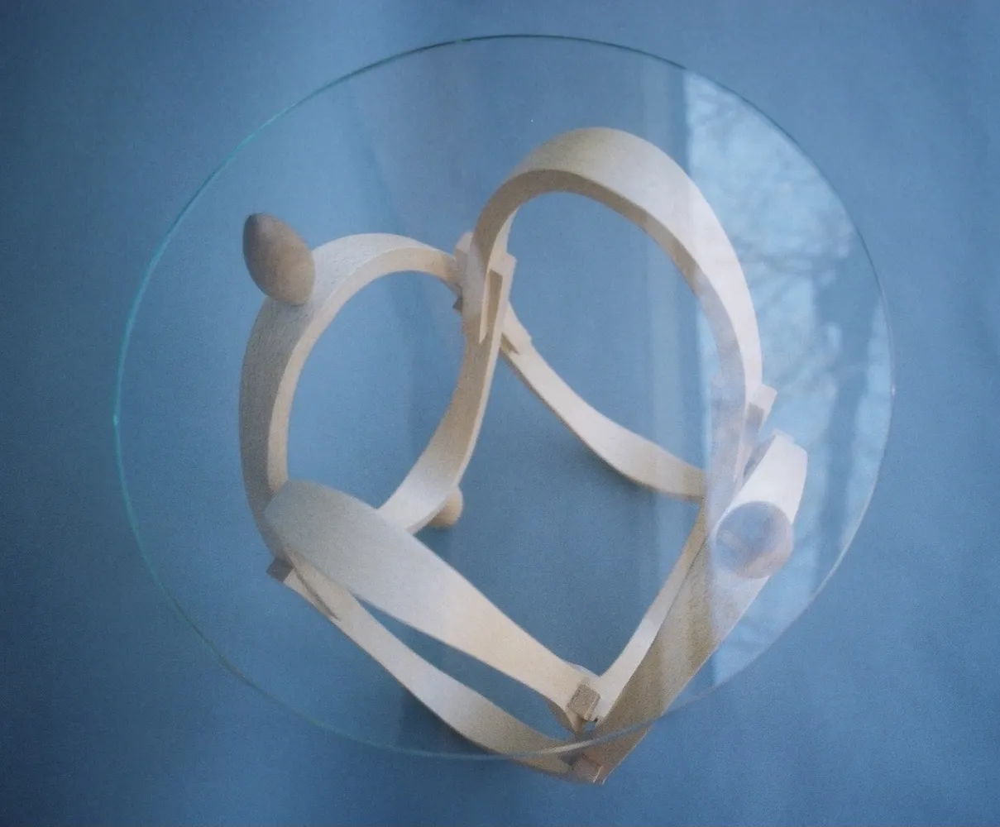
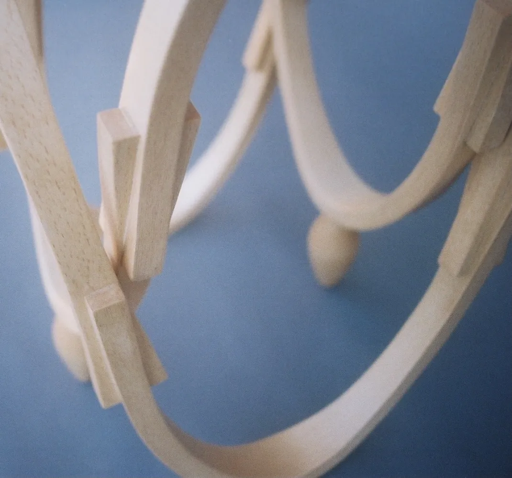

Tamago Side Table
/たまごサイドテーブル
Side table that allows you to enjoy
the egg-shaped ovals from different angles.
Size: H500xW400xD400mm
Materials: 1.2 mm Japanese Beech Veneer, 5 mm Glass
様々な角度からの楕円形を楽しめるサイドテーブル
サイズ：H500xW400xD400mm
素材：ブナ突板1.2mm、ガラス5mm

